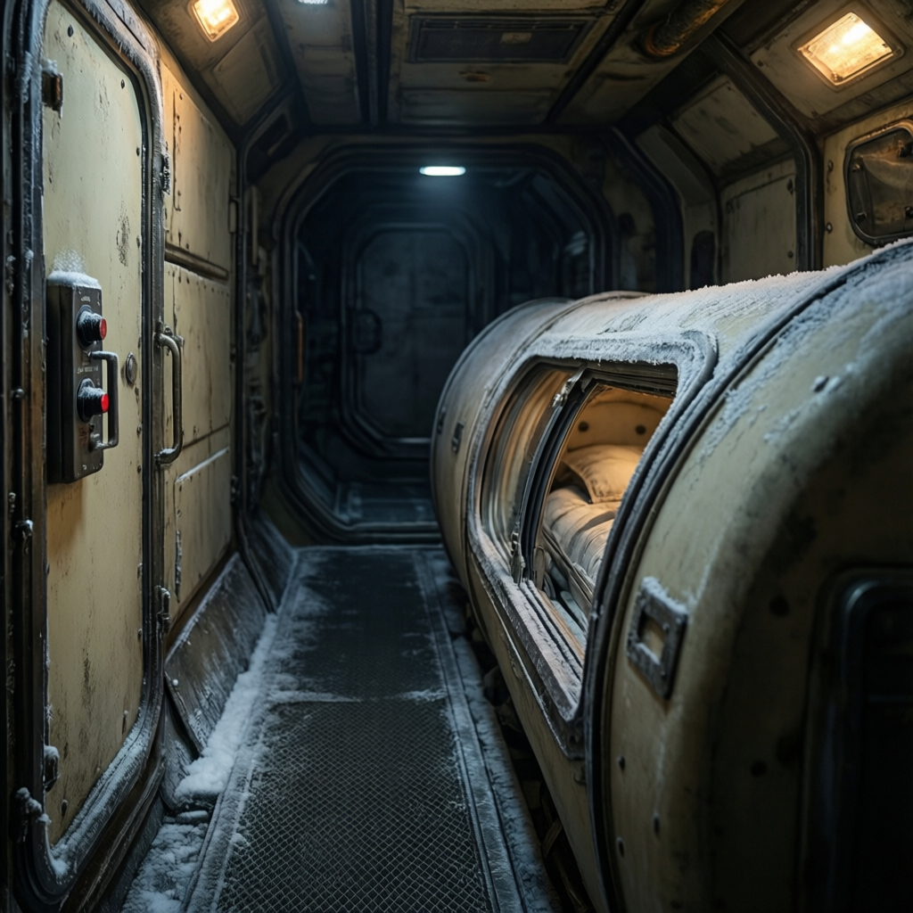
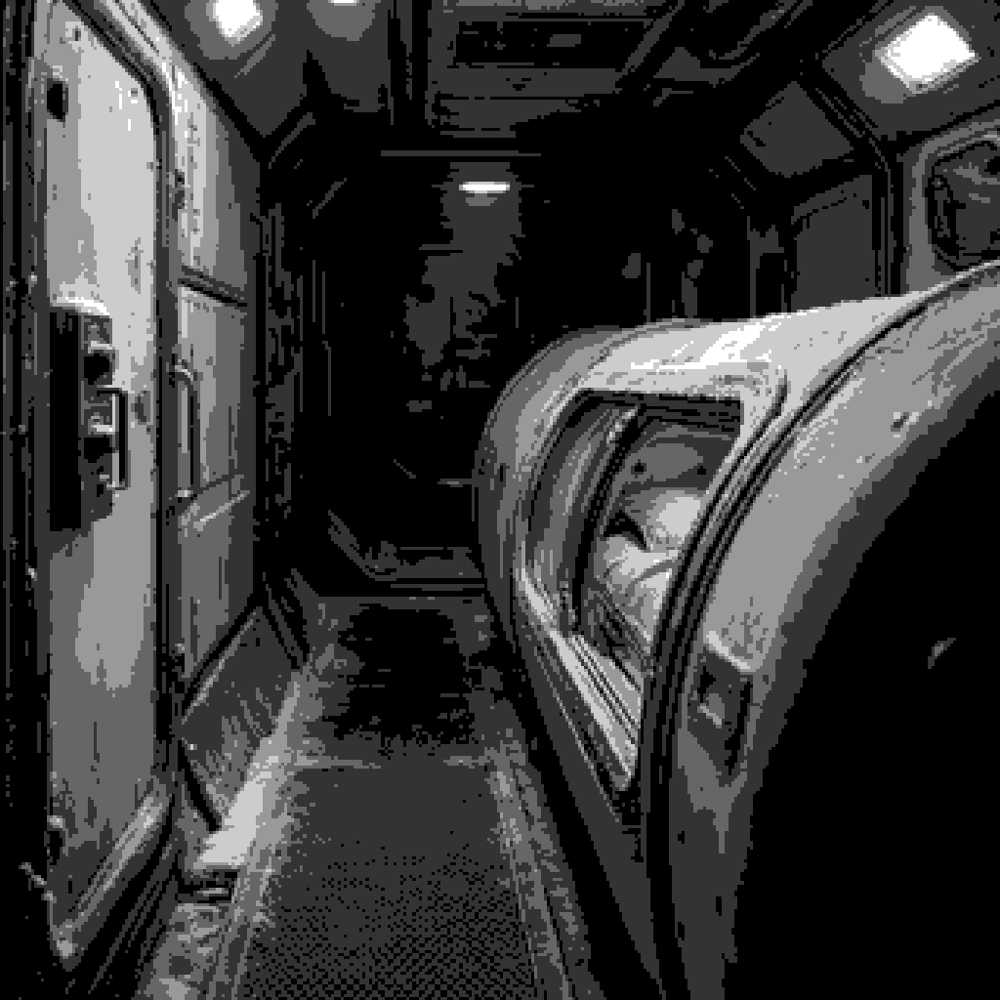
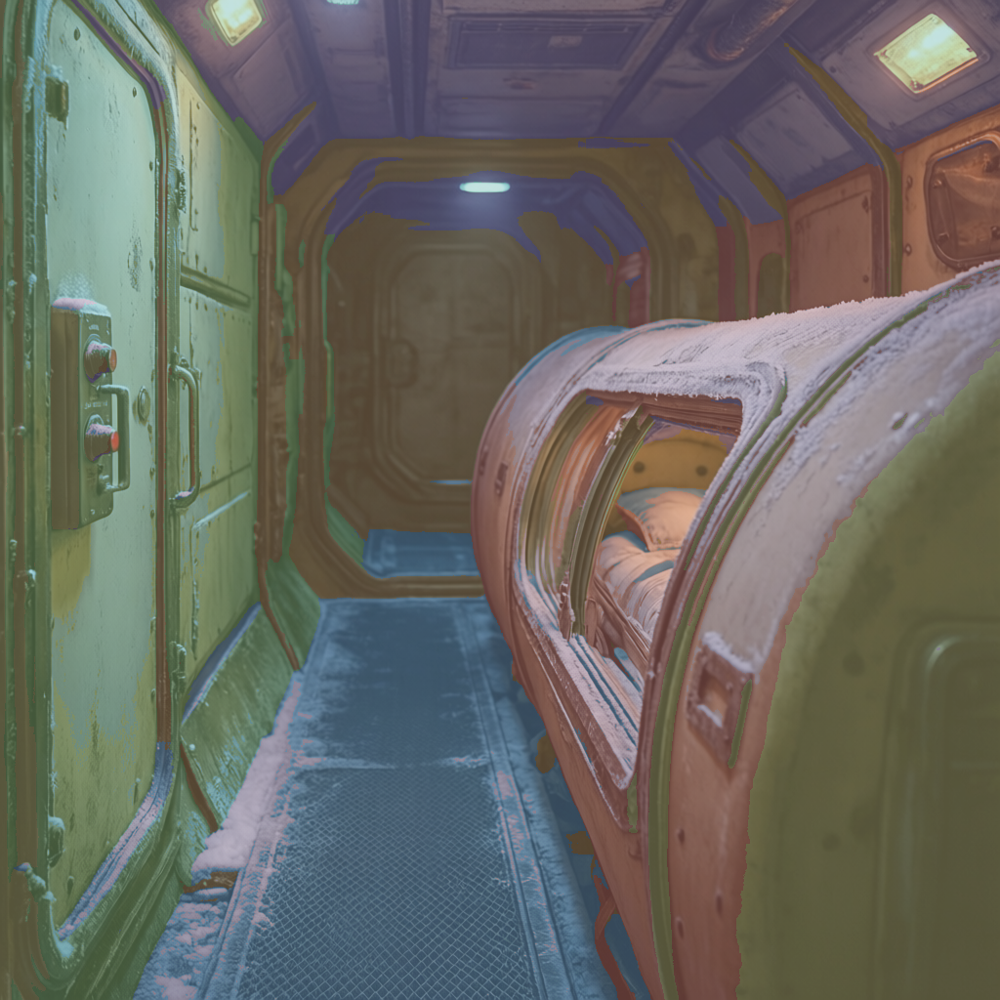
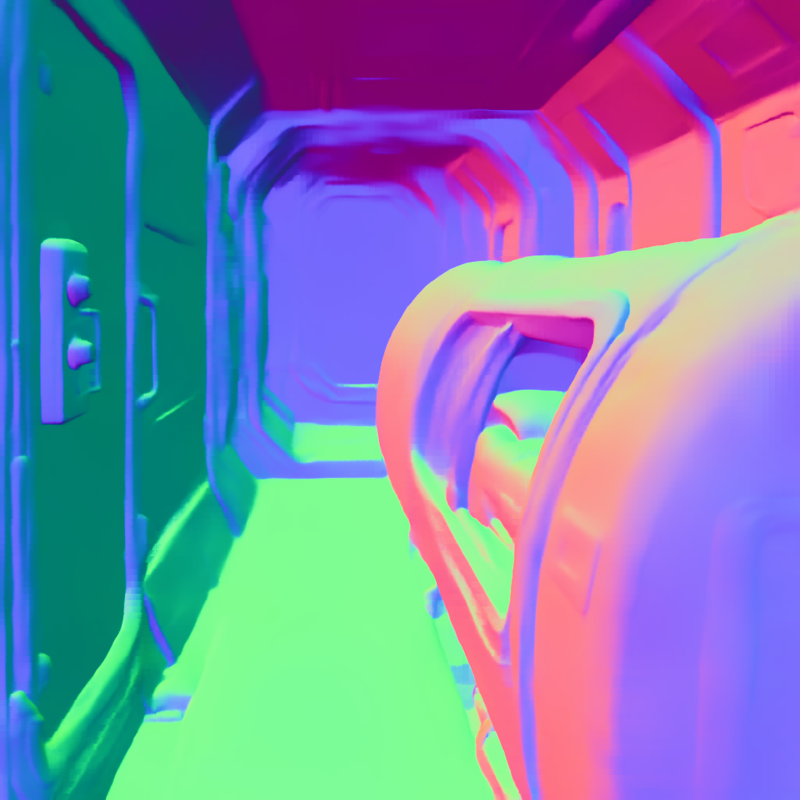
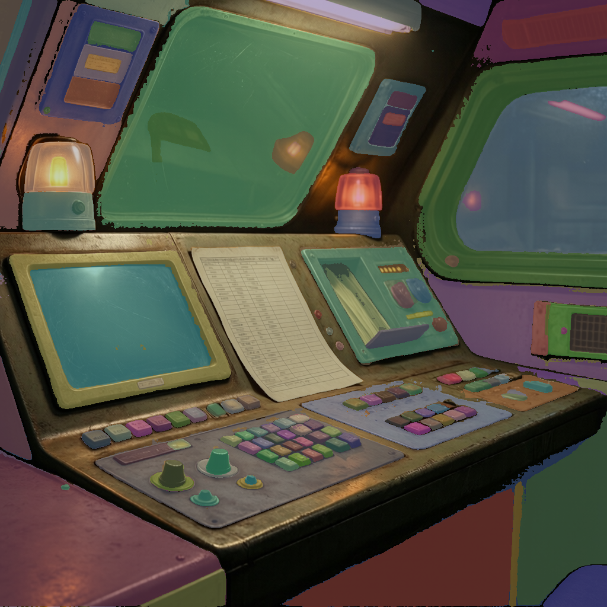
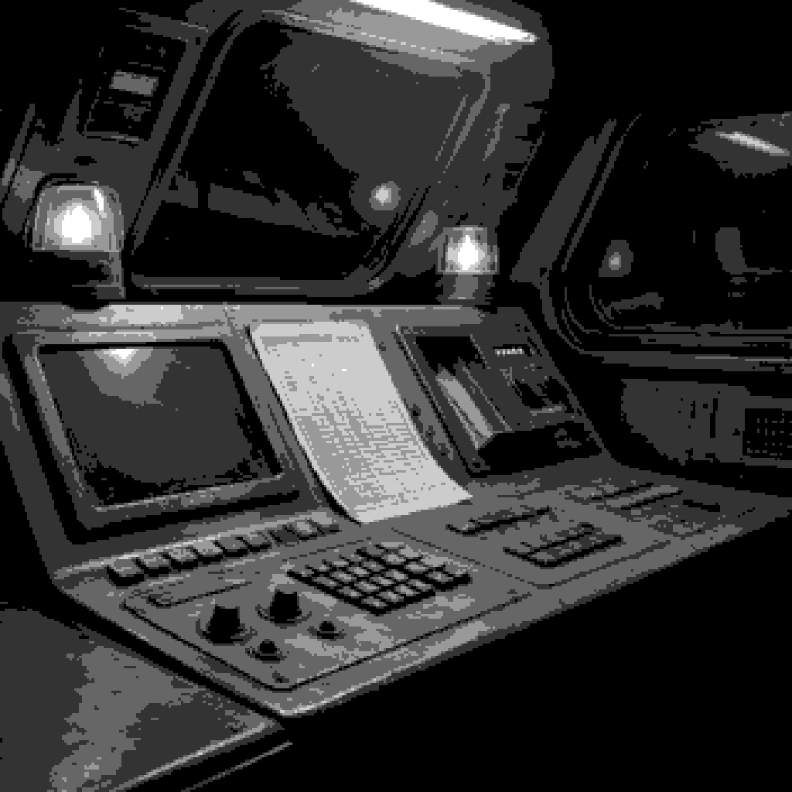
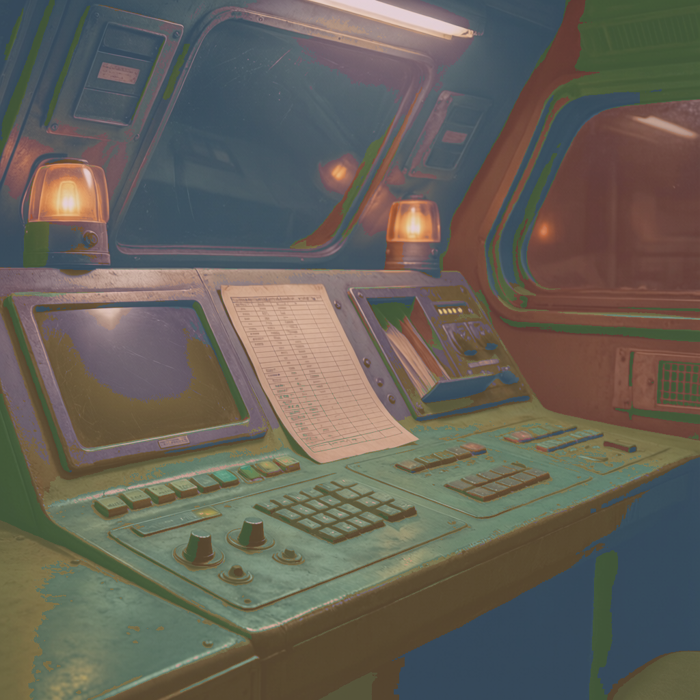
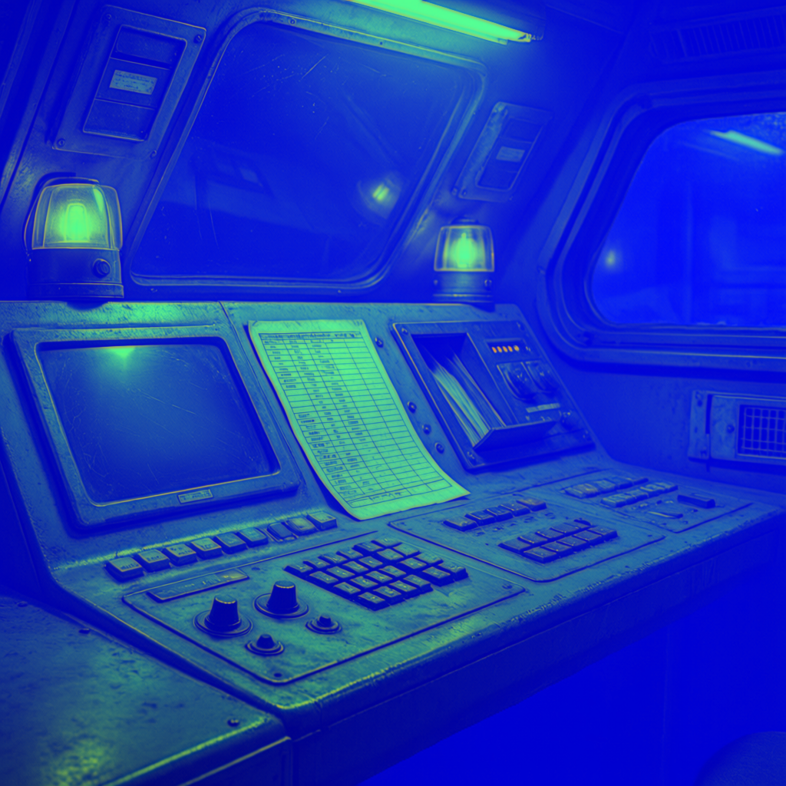
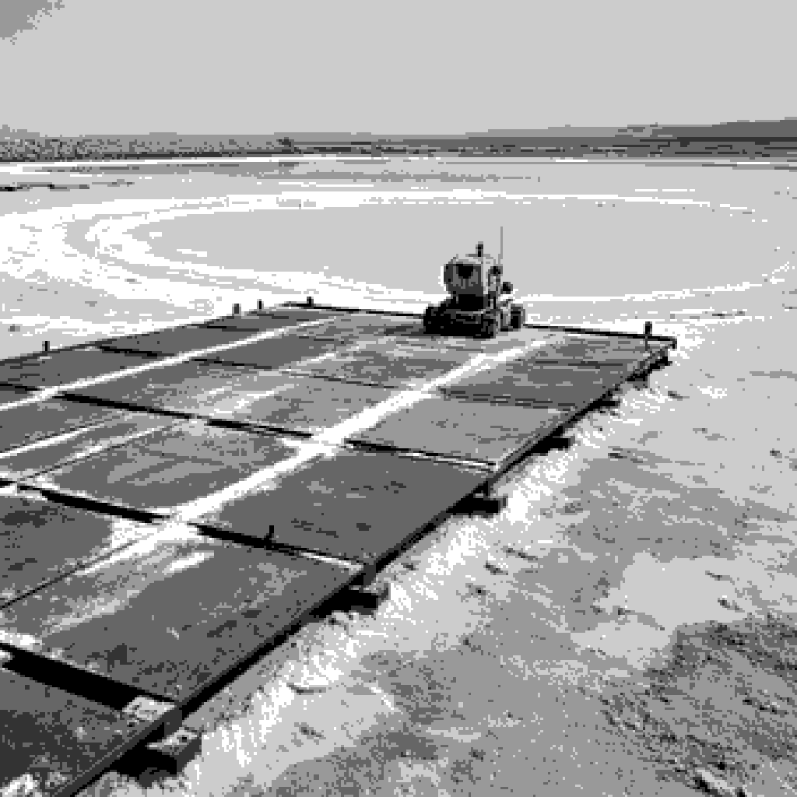
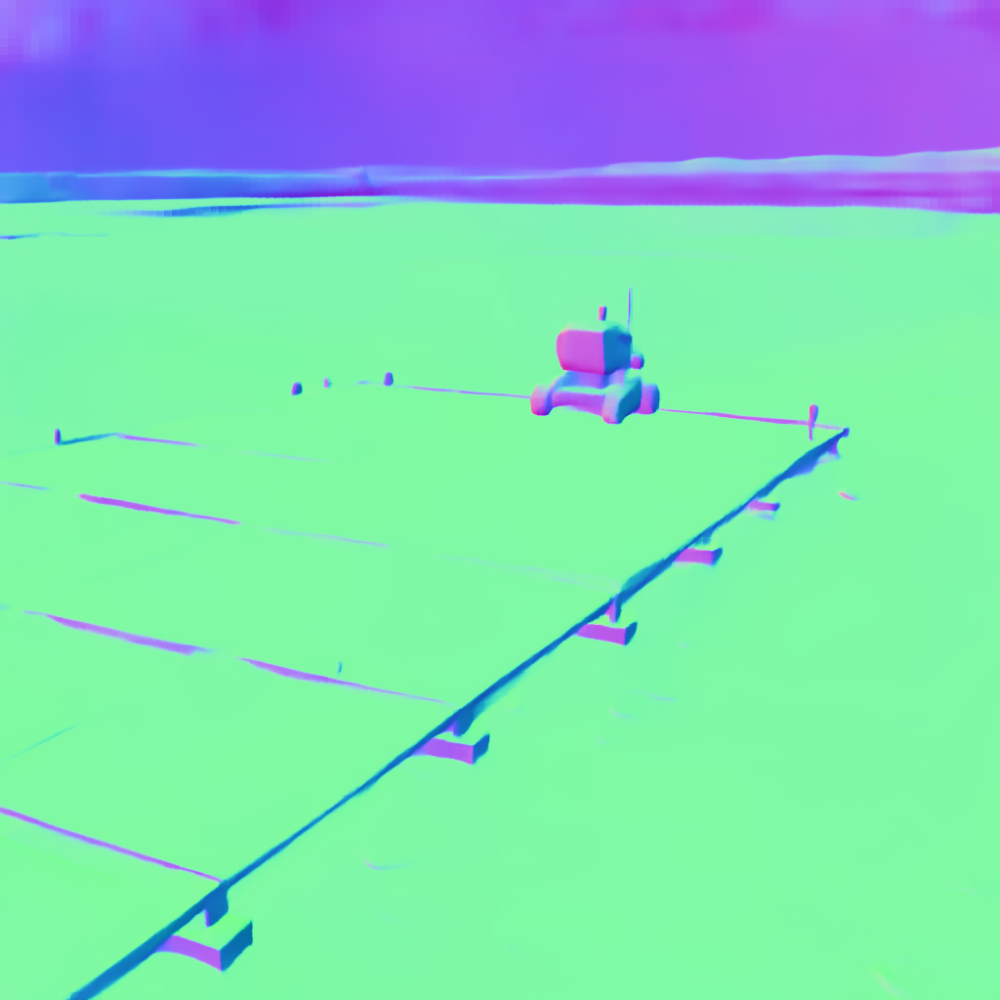

wake-bay
SAM2 kept 150 instances. Material prototype: R emissive, G smooth/specular, B receiver. Coverage: emissive 0.099, specular 0.261, receiver 0.713.







Per scene: original, SAM2 segmentation, deterministic pixelization, material prototype, depth, and DSINE normal. Material is a prototype channel map, not a trained material model.

SAM2 kept 150 instances. Material prototype: R emissive, G smooth/specular, B receiver. Coverage: emissive 0.099, specular 0.261, receiver 0.713.




SAM2 kept 158 instances. Material prototype: R emissive, G smooth/specular, B receiver. Coverage: emissive 0.095, specular 0.218, receiver 0.716.







SAM2 kept 107 instances. Material prototype: R emissive, G smooth/specular, B receiver. Coverage: emissive 0.238, specular 0.747, receiver 0.648.





